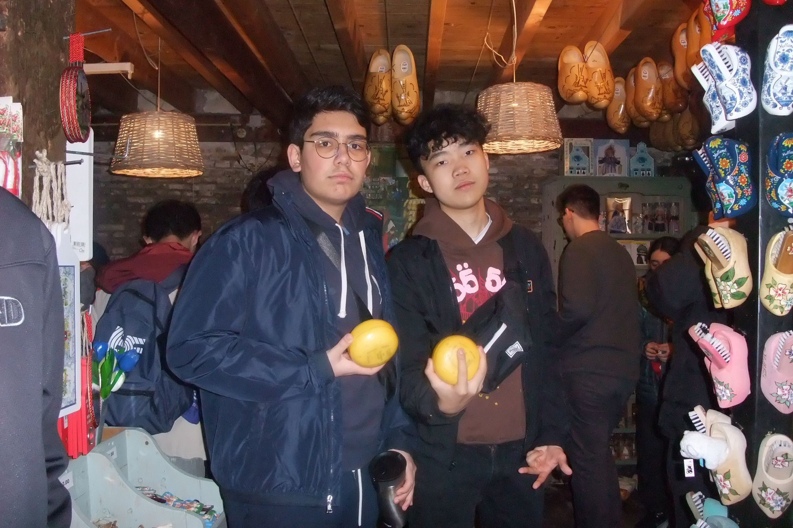

Hey, I'm
Pouya

Hey, I'm
Pouya
About Me
Hi there! My name is Pouya Karimi and I'm a Grade 10 student. As a person, I'm always eager to learn and expand my horizons, and I'm particularly interested in math, computer science, and business, and hope to pursue a career in that field. I enjoy playing tennis and spending time with my friends outside of school, or just killing time on my phone. In school, I love to be a part of clubs, specifically MCPT, MSC, and DECA.
This year I was able to compete in various competitions centered around my passions, including the Canadian Computing Competition, as well as DECA provincial competition. In addition to my personal interests, I believe in giving back to my community. I've volunteered at a local tennis camp where I helped younger kids learn the fundamentals of the sport. I've also gained work experience as a food truck cashier, where I learned the importance of teamwork and customer service. Some of my favourite sports to follow are soccer, tennis, and Formula One, which all work as great conversation starters. If you'd like to get in touch with me, feel free to send an email to pouya.karimi@student.tdsb.on.ca (click to copy to clipboard)